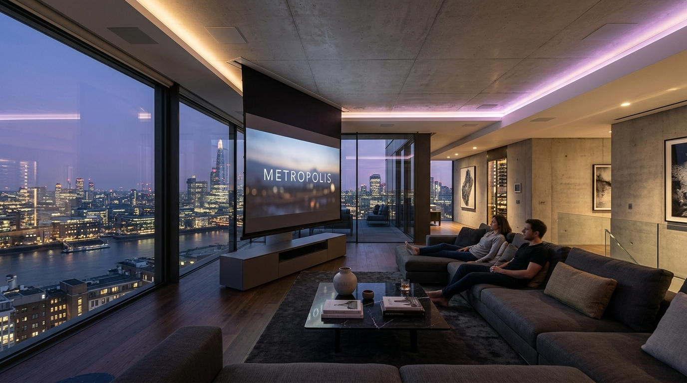
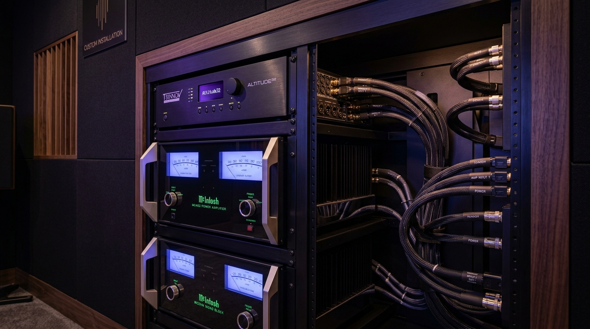

All The Thrill. None Of The Clutter.
Our signature niche is cinema that vanishes. When the film ends, the room returns to being a beautiful living space, with no screens, speakers or wires in sight.

Most Systems Take Over the Room.
Traditional home theatre means a wall of black boxes, a tangle of cables and furniture arranged around the equipment rather than the people. In an open-plan or architecturally significant home, that simply does not work.
We designed the Invisible Cinema to give you full reference-grade performance while preserving the character of your interior. Everything serves the room first, the technology second.
- No screen when you are not watching
- Speakers you cannot see or locate
- Furniture arranged for living, not viewing

Engineered to Disappear
Four disciplines combine to make the Invisible Cinema possible, each perfected over hundreds of installations.
Ceiling Reveal Screens
Motorised screens drop from a shadow-gap detail in seconds and retract completely when idle.
Plaster-In Speakers
Drivers skimmed flush into the wall and painted to match, acoustically transparent and visually absent.
Concealed Racks
Equipment lives in a remote cupboard or utility space, invisible yet fully serviceable.
One-Touch Scenes
A single command dims lights, closes shades and wakes the system. Press again to return to normal.

Reference Performance, Hidden Away.
Invisibility never means compromise. Behind the plaster and joinery sits the same reference-grade hardware we install in dedicated cinemas.
The Invisible Cinema, Included
Everything You Need
- Motorised 100–150 inch ALR screen
- Native 4K laser projector with ceiling concealment
- 7.1.4 invisible in-wall speaker array
- Concealed rack and structured cabling
- Lighting and shade scene integration
- Full audio and video calibration
Built for Real Life
Most of our clients live in their rooms every day. The system has to be effortless for a partner, a child, or a houseguest to operate without a briefing.
That is why every Invisible Cinema ships with a simple three-button remote, a single scene keypad, and automatic calibration that keeps itself accurate over time.
Yes. We offer reversible surface and on-wall options that leave no structural changes for apartment or rental installations.
A typical living-room Invisible Cinema is completed in three to five days on site, once the design is approved and equipment has arrived.
Absolutely. The platform supports additional rooms and outdoor zones, and we run spare conduit during installation so future upgrades need no new construction.
Living With Invisible Cinema
"Guests genuinely do not believe there is a full cinema in the room until the screen drops. It is the most used 'hidden' feature in our home."
"The speakers are invisible and the sound is astonishing. Our interior designer was thrilled that nothing had to change."
"Three buttons. That is all my family needed to learn. The engineering behind that simplicity is what impressed me most."
Reclaim Your Living Room.
Tell us about your space and we will show you exactly what an Invisible Cinema can look like in it.